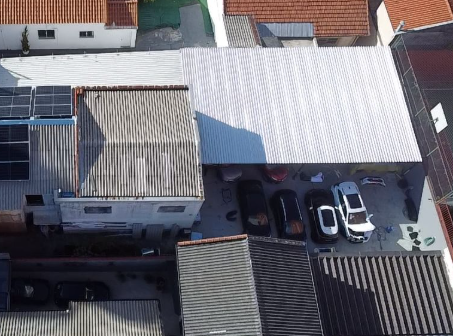
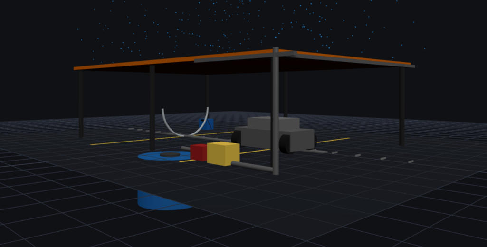
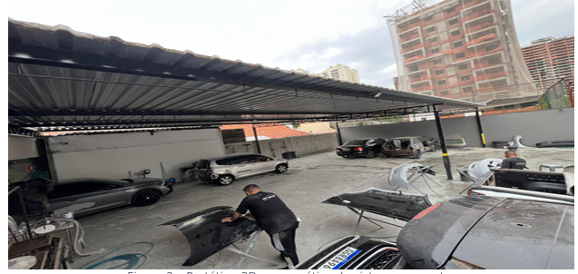
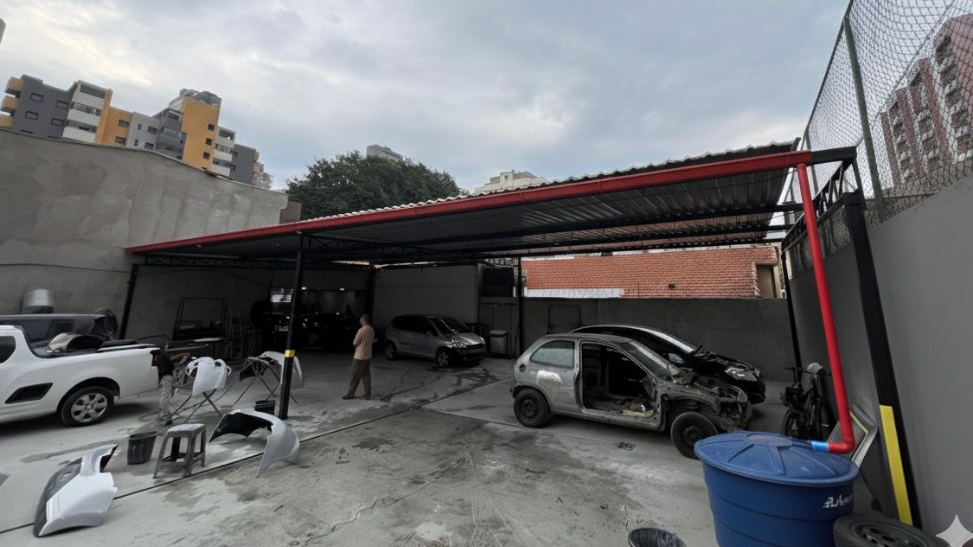

Captação & Reuso de Água de Chuva
Estudo de caso — Original Estética Automotiva
Disciplina: Ecologia e Sustentabilidade • FEI
Integrantes: Heron de Souza (líder), Vinicius Trivelatto, João Mateus E. B. da Silva, Matheus Concon, Dante Ryuchi Kawazu
Introdução, contexto e problema
Em Santo André (SP), oficinas automotivas utilizam volumes consideráveis de água para lavagem de veículos e limpeza de pátio. Esse consumo, normalmente suprido pela rede pública, eleva custos operacionais e pressiona mananciais urbanos.
O projeto propõe a captação pluvial no telhado da Original Estética Automotiva, com filtragem e reuso imediato em usos não potáveis. A abordagem segue a lógica de Produção Mais Limpa (P+L), reduz a pegada hídrica e dialoga com o ODS 6 (ONU).
Embora o estudo tenha sido dimensionado para este endereço em Santo André, a solução é modular e replicável em outras empresas da região metropolitana, especialmente onde existam telhados metálicos, queda d’água adequada e demanda não potável estável.

Contexto ecológico & diretrizes
- P+L — Produção Mais Limpa: Estratégia preventiva: reduzir consumo e resíduos na origem, antes do tratamento no fim do tubo.
- Pegada hídrica: Métrica do volume total de água usado (direta e indiretamente). Aqui reduzimos “água azul” tratada.
- ODS 6 / 12 / 13: Uso eficiente de água; consumo responsável; adaptação climática (picos de chuva e estiagens).
- Manejo pluvial (LID): Infraestruturas pequenas e distribuídas para reter/infiltrar/atrasar a água da chuva no lote.
- ABNT NBR 15527: Norma brasileira para aproveitamento de água de chuva em usos não potáveis e segregados.

Diagnóstico do local

Premissas do Projeto
- Demanda diária estimada: ~1.600 L (usos não potáveis).
- Área de captação: ~96 m² (telha metálica com boa declividade).
- Qualidade da água: descartar a primeira água e filtrar (areia + carvão).
- Pontos críticos: sólidos/óleos exigem first flush eficaz e filtro robusto.
Solução proposta: fluxo do sistema

- Coleta no beiral (calha metálica 125 mm).
- Descida por gravidade (condutor Ø100 mm).
- First flush para descarte da água inicial.
- Filtragem (caixa de areia + carvão ativado).
- Reservatório subterrâneo (~2.000 L).
- Bombeamento (bomba ½ HP) para reuso.
Aplicação restrita a usos não potáveis (lavagem de veículos/pátio, descargas).
Protótipo 3D: ferramenta de validação
Valor do protótipo
- Validação visual: posição de calhas, filtro e reservatório.
- Simulação de fluxo: do telhado ao reuso.
- Comunicação: entendimento rápido por equipe/cliente.
- Testes: painel permite ajustar parâmetros de captação.
Método de cálculo & estimativas
- Cálculo: 138.067 L = 96 m² × (1.880/1000) × 0,85 × (1 − 0,10)
- Captação anual: ≈ 138.067 L (≈ 138 m³)
- Média diária: ≈ 378 L
- Cobertura de demanda: 378 L / 1.600 L ≈ 24%
Indicador ecológico: evita ~138 mil L/ano de água tratada, reduzindo pressão sobre mananciais e escoamento superficial.
Custos de referência & retorno (payback)
| Item | Classe | Subtotal (R$) |
|---|---|---|
| Calha metálica 125 mm (16 m) | Material | 1.920,00 |
| Condutor vertical & tubulação PVC | Material | 427,00 |
| Filtro (areia + carvão ativado) | Componente | 550,00 |
| Bomba centrífuga ½ HP | Componente | 750,00 |
| Reservatório 2.000 L (PEAD) | Componente | 2.200,00 |
| Acessórios (lote) | Material | 350,00 |
| Mão de obra (instalação) | Serviço | 1.800,00 |
| Total estimado | R$ 7.997,00 | |
Varia com tarifa local (R$/m³) e regime de chuvas anuais.
Glossário rápido (conceitos-chave)
P+L
Prevenção na fonte: diminuir consumo e resíduos antes do tratamento. Traz eficiência e menor custo operacional.
Pegada hídrica
Volume total de água necessário a um produto/serviço. Reduzimos a “água azul” ao usar chuva filtrada.
First flush
Dispositivo que descarta a primeira lâmina da chuva (mais poluída), protegendo o filtro e a cisterna.
NBR 15527
Norma da ABNT para aproveitamento de água de chuva em usos não potáveis, com segregação e rotulagem.
NBR 10844
Regras para dimensionar calhas e condutores de águas pluviais em edificações.
ODS 6/12/13
Metas da ONU: água e saneamento, consumo responsável e ação climática.
Sazonalidade & cenários de produção
By-pass à rede pública garante continuidade na estiagem. Armazenamento modular pode elevar a cobertura em anos úmidos.
Conclusões & próximos passos
Viável tecnicamente, atrativo economicamente e recomendado ecologicamente.
- Viabilidade técnica: componentes de mercado (PEAD, PVC, bombas), manutenção simples.
- Benefício ecológico: redução da pegada hídrica e do escoamento superficial urbano.
- Replicabilidade: solução modular aplicável a outras oficinas/empresas em Santo André e região.
Projeto Executivo: protótipo 3D + traçado final + memoriais + orçamento consolidado.
Obrigado!
Ecologia e Sustentabilidade
Heron de Souza • Vinicius Trivelatto • João Mateus E. B. da Silva • Matheus Concon • Dante Ryuchi Kawazu